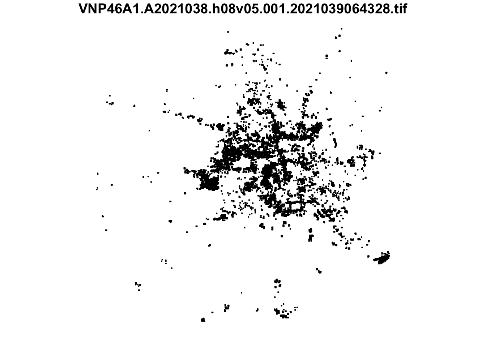
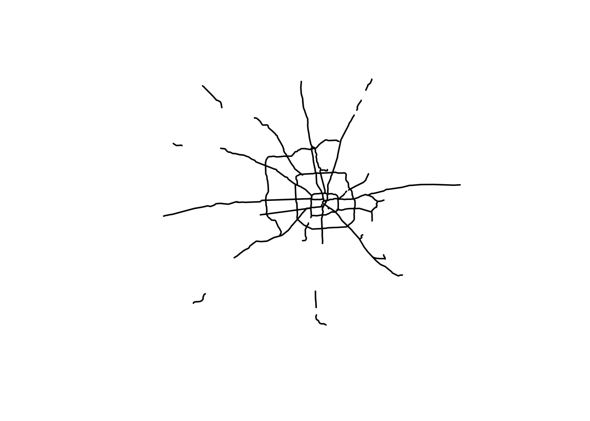
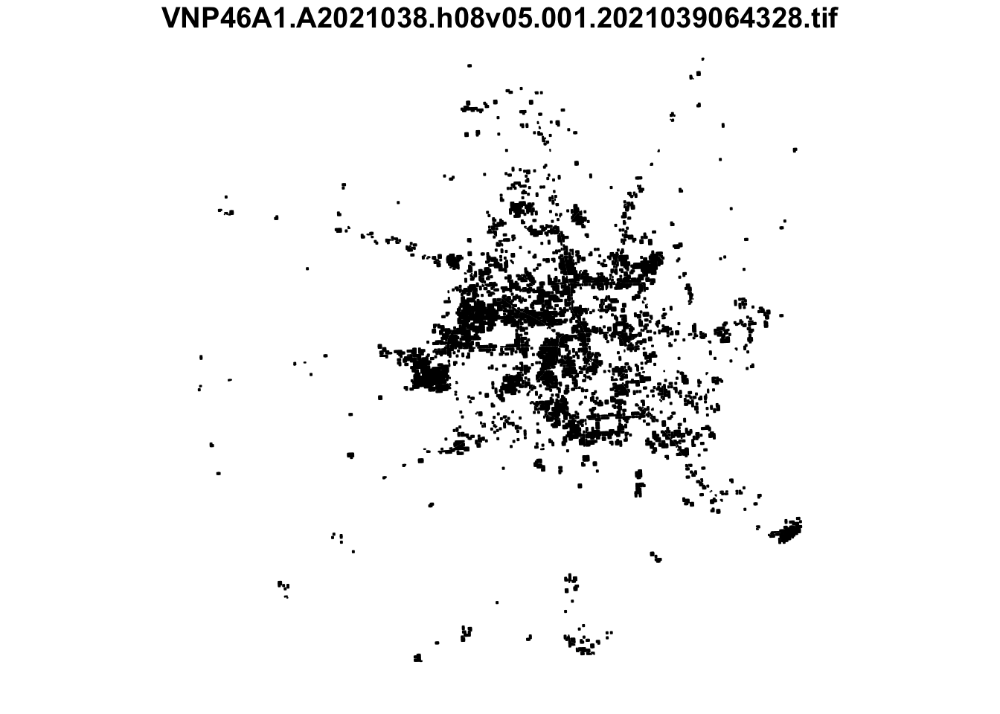
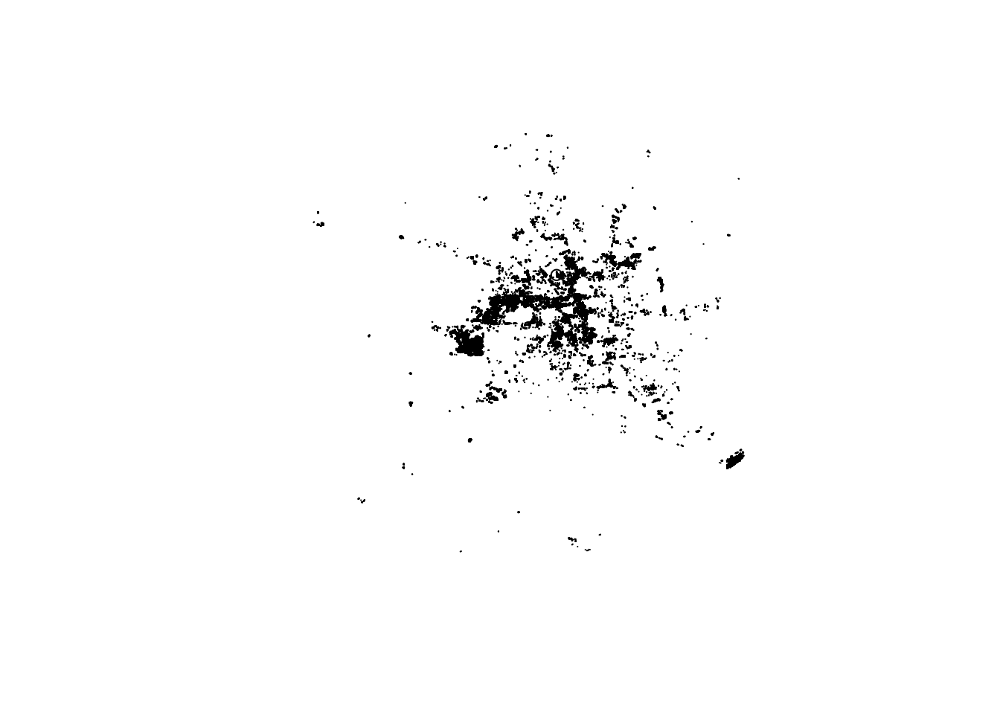
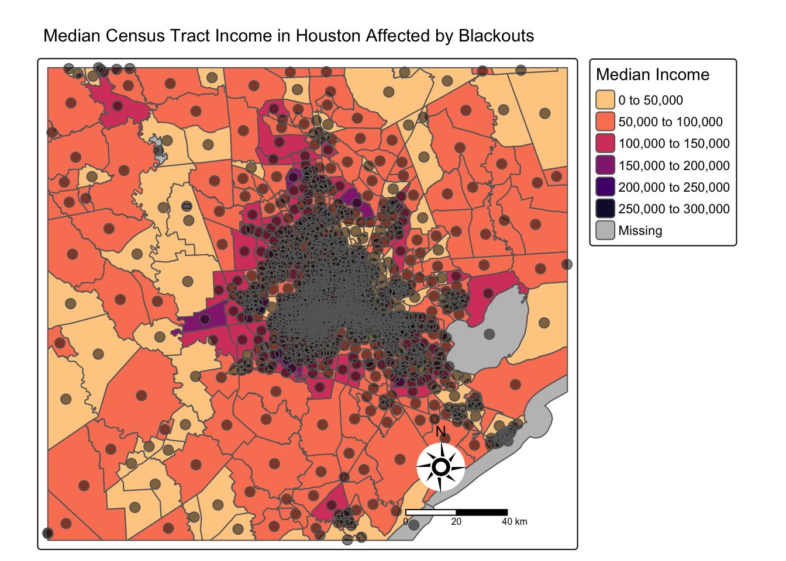
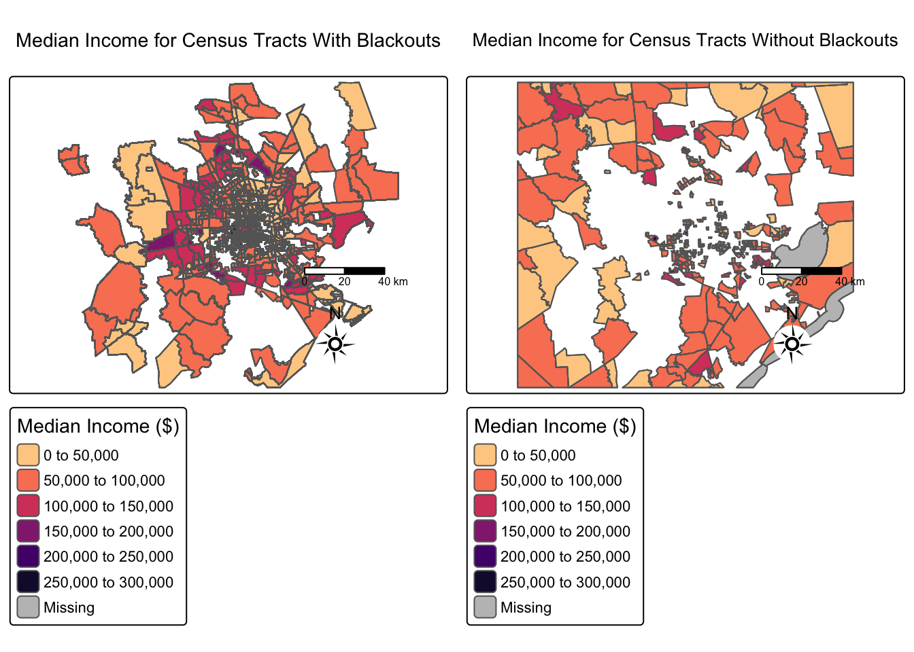
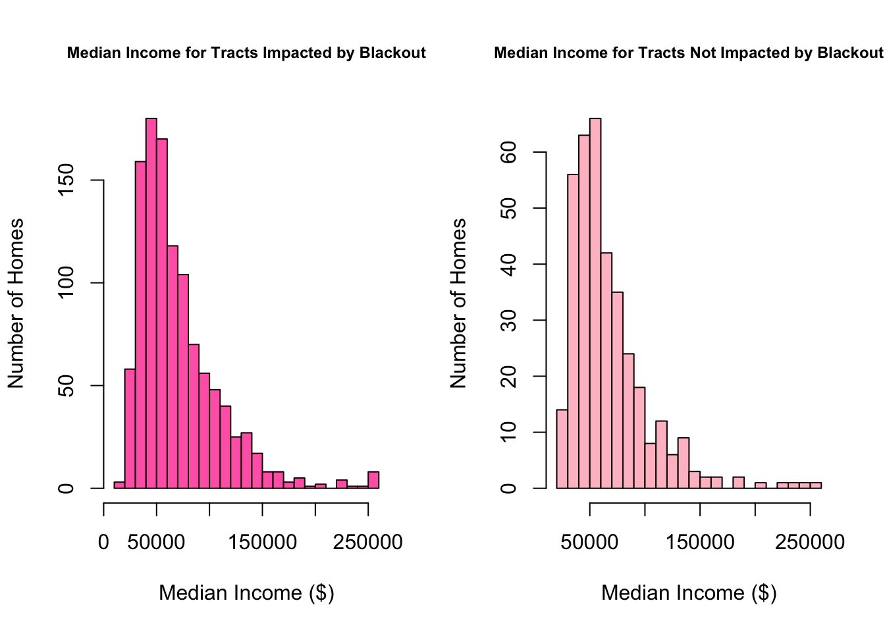
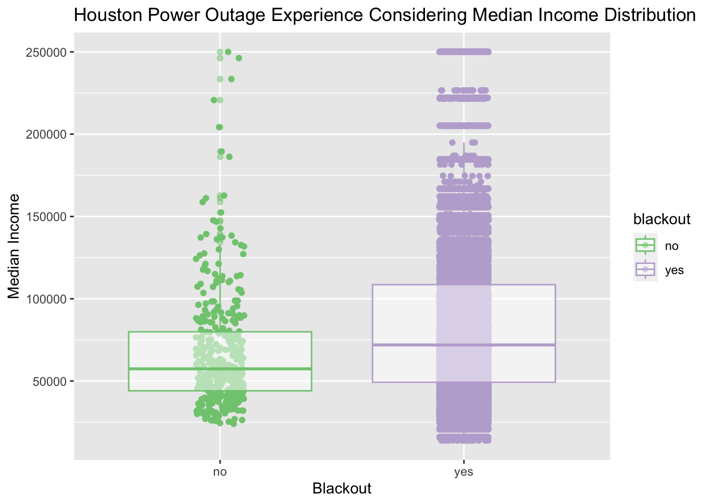

# Reading in Libraries
library(tidyverse)
library(sf)
library(raster)
library(tmap)
library(terra)
library(stars)
library(patchwork)Overview
Throughout the month of February in 2021, the state of Texas suffered a major power crisis, which came about as a result of three severe winter storms sweeping across the United States on February 10–11, 13–17, and 15–20.”1 For more background, check out these engineering and political perspectives. For this project, we will estimate the number of homes in Houston that lost power as a result of the first two storms and investigate if socioeconomic factors are predictors of communities recovery from a power outage. Our analysis will be based on remotely-sensed night lights data, acquired from the Visible Infrared Imaging Radiometer Suite (VIIRS) onboard the Suomi satellite. In particular, we will use the VNP46A1 to detect differences in night lights before and after the storm to identify areas that lost electric power. To determine the number of homes that lost power, we will link (spatially join) these areas with OpenStreetMap data on buildings and roads. By linking our analysis with data from the US Census Bureau we can investigate the potential socioeconomic factors that influenced recovery.
Learning objectives:
- load vector/raster data
- simple raster operations
- simple vector operations
- spatial joins
Libraries
Finding Locations of Blackouts
Night Lights Data
Use NASA’s Worldview to explore the data around the day of the storm. There are several days with too much cloud cover to be useful, but 2021-02-07 and 2021-02-16 provide two clear, contrasting images to visualize the extent of the power outage in Texas.
VIIRS data is distributed through NASA’s Level-1 and Atmospheric Archive & Distribution System Distributed Active Archive Center (LAADS DAAC). Many NASA Earth data products are distributed in 10x10 degree tiles in sinusoidal equal-area projection. Tiles are identified by their horizontal and vertical position in the grid. Houston lies on the border of tiles h08v05 and h08v06. We therefore need to download two tiles per date.
VNP46A1.A2021038.h08v05.001.2021039064328.h5.tif: tile h08v05, collected on 2021-02-07VNP46A1.A2021038.h08v06.001.2021039064329.h5.tif: tile h08v06, collected on 2021-02-07VNP46A1.A2021047.h08v05.001.2021048091106.h5.tif: tile h08v05, collected on 2021-02-16VNP46A1.A2021047.h08v06.001.2021048091105.h5.tif: tile h08v06, collected on 2021-02-16
Reading VIIRS Data
Reading in night lights tiles using stars:
Combining Tiles
Combining tiles into a single stars object for each date (2021-02-07 and 2021-02-16).
# Combining tiles for each date as a stars object
feb_07 <- st_mosaic(VIIRS_05_07, VIIRS_06_07)
feb_16 <- st_mosaic(VIIRS_05_16, VIIRS_06_16)Making a Mask
To find the change in night-light intensity (presumably) caused by the storm, we must make a mask to conceal the data that experienced a drop less than 200 nW cm-2sr-1. This reclassification of the difference raster was done assuming that any location that experienced a drop of more than 200 nW cm-2sr-1 experienced a blackout. All locations not considered blackout zones were assigned NA.
# Creating a mask to identify locations that experienced a drop greater than 200 nW cm-2sr-1
blackout_locations <- (feb_07 - feb_16) > 200
# Assigning non-blackout locations to be NA values
blackout_locations[blackout_locations == FALSE] <- NAVectorized Mask
To vectorize the blackout mask, apply st_as_sf() and correct invalid geometries by piping st_make_valid.
# Transforming the mask into a vector and fixing improper geometries
vector_blackout_locations <- st_as_sf(blackout_locations) %>%
st_make_valid(vector_blackout_locations)
# Displays CRS of vector data
#glimpse(crs(vector_blackout_locations))Cropping a Vectorized Map for Region of Interest
The Houston metropolitan area was initially defined using the following coordinates:
(-96.5, 29), (-96.5, 30.5), (-94.5, 30.5), (-94.5, 29)
These coordinates were then turned into a polygon using st_polygon and further converted into a simple feature collection (sfc) using st_sfc(). The CRS of this sfc was then converted to match the map to perform the crop.
Special Feature Collection
# Defining the Region of Interest
houston <- st_polygon(list(rbind(c(-96.5, 29),
c(-96.5, 30.5),
c(-94.5, 30.5),
c(-96.5, 29))))
# Creating a sfc and assigning the CRS to match the vector blackout data
houston <- st_sfc(houston) %>%
st_set_crs(4326) %>%
st_make_valid()
# Confirms last step was successful
#glimpse(crs(houston))Making a Mask
A cropped version of the blackout map was created using st_crop , this mask of the region of interest was then re-projected to EPSG:3083 (NAD83 / Texas Centric Albers Equal Area).
# cropping blackout locations to the houston dimensions
houston_blackout_mask <- st_crop(vector_blackout_locations, houston)
# Re-projecting to match the maps
houston_blackout_mask <- houston_blackout_mask %>%
st_transform(3083) %>%
st_make_valid(houston_blackout_mask)
Excluding Highways from the Blackout Map
Roads Data
Typically highways account for a large portion of the night lights observable from space (see Google’s Earth at Night). To minimize falsely identifying areas with reduced traffic as areas without power, we will ignore areas near highways.
OpenStreetMap (OSM) is a collaborative project which creates publicly available geographic data of the world. Ingesting this data into a database where it can be subsetted and processed is a large undertaking. Fortunately, third party companies redistribute OSM data. We used Geofabrik’s download sites to retrieve a shapefile of all highways in Texas and prepared a Geopackage (.gpkg file) containing just the subset of roads that intersect the Houston metropolitan area.
gis_osm_roads_free_1.gpkg
Reading in Highway Data
Using sf package and st_read() to load in the highway data. Additionally, SQL, a language used for storing, manipulating, and retrieving data, was employed to optimize our workflow. A SQL query is describes the mechanism in which the data will be read in. The SQL query is stored as query below. The data was then re-projected to match the CRS of the map data EPSG:3083
Creating a Buffer
Using st_buffer to create an undissolved area within 200 m of all highways and st_union to dissolve the buffers.
# Creating a 200 m buffer and dissolving it as a single object
highway_buffer <- st_buffer(highways, dist = 200)
# combines the geometries within the buffer as one geometric polygon
highway_buffer <- st_union(highway_buffer)A preliminary check to see if the buffer was successful.

Now to combine the cropped vector blackout data of Houston with the highway buffer we created above using st_difference.
We expect a few observations to be removed, but to be relatively the same length.

Finding Homes Impacted by Blackouts
Buildings Data
We can also obtain building data from OpenStreetMap. We downloaded from Geofabrick and prepared a GeoPackage containing only houses in the Houston metropolitan area.
gis_osm_buildings_a_free_1.gpkg
Quantifying Homes Within Blackout Areas
Using the st_intersection function to filter for homes beyond the buffer that were effected by blackouts to estimate the number of homes effected by the blackout to be 168,873.
[1] 168874Preliminary visualization of Houston Homes effected by the blackout

Investigating Socioeconomic Factors
Socioeconomic Data
We cannot readily get socioeconomic information for every home, so instead we obtained data from the U.S. Census Bureau’s American Community Survey for census tracts in 2019. The folder ACS_2019_5YR_TRACT_48.gdb is an ArcGIS “file geodatabase”, a multi-file proprietary format that’s roughly analogous to a GeoPackage file.
The geodatabase contains a layer holding the geometry information, separate from the layers holding the ACS attributes. You have to combine the geometry with the attributes to get a feature layer that sf can use.
Read in Socioeconomic Data with sf
Using st_read() to load the geodatabase layers and st_layers() to explore the contents of the geodatabase. Each layer contains a subset of the fields documents in the ACS metadata. Geometries are stored in the ACS_2019_5YR_TRACT_48_TEXAS layer, income data is stored in the X19_INCOME layer, and the median income field B19013e1.
Figure 1: Census Tracts Median Income Examining Blackout Impacts
- A map of median income by census tract, designating which tracts had blackouts with bubbles.
tmap_mode('plot')
#Create a map of median income by census tract, designating which tracts had blackouts
tm_shape(houston_income) +
tm_polygons(fill = "median_income",
title = "Median Income",
palette = "magma") +
tm_compass( type = 'rose',
lw = 0.,
size = 3) +
tm_bubbles(size = 0.6,
col = 'black',
alpha = 0.5,
fill_alpha.scale = 'black') +
tm_scale_bar(position = c('right','bottom')) +
tm_title(text = "Median Census Tract Income in Houston Affected by Blackouts", size = 1) 
Figure 2: Median Income & Examining Blackout vs No Blackouts
- A map of median income by census tract, designating which tracts had blackouts with bubbles.
#census tracts with blackouts
blackout_map <- tm_shape(trac_with_blackout) +
tm_polygons(fill = "median_income",
title = "Median Income ($)",
palette = "magma") +
tm_borders() +
tm_title(text = "Median Income for Census Tracts With Blackouts") +
tm_scalebar(position = c('right','bottom')) +
tm_compass( type = 'rose',
lw = 0.,
size = 2)
#census tracts with no blackouts
no_blackout_map <- tm_shape(no_blackout) +
tm_polygons(fill = "median_income",
title = "Median Income ($)",
palette = "magma") +
tm_borders() +
tm_title(text = "Median Income for Census Tracts Without Blackouts") +
tm_scalebar(position = c('right','bottom')) +
tm_compass( type = 'rose',
lw = 0.,
size = 2)
tmap_arrange(blackout_map, no_blackout_map)
Figure 3: Histogram: Median Income Distribution & Examining Blackout vs No Blackouts
- Histogram of the distribution of income in impacted and unimpacted tracts.

[1] 77604 122698 251618 124557 116984 207667 166022 210347 97600 206021
[11] 270803 144875 109500 99438 144428 130827 84398 91936 147308 156364
[21] 195435 80333 130443 127596 71050 72491 94049 141046 NA 99354
[31] 155561 153485 194259 171843 160758 105063 146801 171376 123042 155032
[41] 102956 105276 167909 143914 79011 113251 285336 120269 97497 150902
[51] 137227 147377 271990 183323 123457 180272 106271 68402 106499 89528
[61] 93827 96987 97564 79298 83854 231997 139694 120278 91799 70595
[71] 71955 164084 74305 94071 105675 112500 112776 105000 134407 85958
[81] NA 87784 101083 124443 137279 159342 133270 124533 127060 95910
[91] 102712 122952 68382 182575 175033 204551 223788 97617 102583 79769
[101] 90200 99652 122117 135886 152528 104844 141465 167621 111498 150045
[111] 114864 121408 NA 153458 140505 172804 201814 112059 203226 131411
[121] 123757 182732 122454 149065 172500 126820 134434 121303 165855 127145
[131] 100251 161915 154839 112971 121222 98694 161635 240708 170141 78354
[141] 112172 179617 136480 177349 135675 236507 149160 281841 160208 117072
[151] 99858 101406 140741 140624 233284 136146 103906 69965 201783 286196
[161] 296770 172682 334038 128174 109064 149057 126371 111664 113699 106406
[171] 105827 75674 91453 155793 81261 85091 132480 103532 138824 163189
[181] 84884 117055 113489 149274 85429 84580 113465 156860 80662 55777
[191] 94180 106653 134703 220372 99813 147221 153137 73910 76226 167653
[201] 64691 128601 92213 111166 104597 155423 71441 119603 163250 NA
[211] 75086 87187 99053 128531 86458 88641 171836 98619 109677 103668
[221] 75872 95956 89359 65948 NA 142778 122889 80081 79092 85276
[231] 62488 95764 119249 106888 79214 84769 143343 57496 80469 121629
[241] 80956 109119 86855 168538 127058 125958 96920 126343 144954 162487
[251] 161000 109671 186210 125455 107944 110468 216101 150143 136948 204456
[261] 252635 168986 129002 182983 156126 129458 189893 133734 117389 105859
[271] 143158 110222 65799 68145 68289 79021 85131 89187 191226 130798
[281] 161549 123344 109878 98666 93896 127919 204942 84764 82517 194775
[291] 143341 148118 166052 174244 227594 NA 224378 127946 215203 79778
[301] 154503 220122 63797 99500 126004 208311 99014 143312 69282 284656
[311] 200786 90100 99031 168134 106726 137400 115791 93402 90106 NA
[321] 294069 128978 104749 137921 113827 116880 115071 212522 127066 126713
[331] 108030 176294 104707 239789 NA 151550 146770 183378 71402 138316
[341] 124003 136340 89057 64728 94112 132306 132417 124416 117791 97869
[351] 96333 192929 231622 180296 160456 115344 125783 160853 162340 NA
[361] 157292 78772 102062 219654 224741 166361 153235 97082 194616 261450
[371] 90499 195312 250961 75432 103183 230874 81786 129193 102307 87109
[381] 135199 172402 222097 165274 97084 98632 122731 202099 236901 99158
[391] 95047 124543 86985 110537 120799 130358 213668 136226 101549 138678
[401] 121737 102274 120962 159968 120413 193099 247217 143563 143842 150694
[411] 170561 109594 149242 134653 118443 203831 203546 117540 143727 130368
[421] 169113 96179 137652 111047 172971 163477 128906 92717 141853 180243
[431] 93181 NA 124947 84550 87612 89911 105777 180097 154823 102265
[441] 141656 188661 101061 128425 262477 134261 142707 206035 128344 71338
[451] 89925 117803 128632 117773 121221 128154 215284 138294 83565 104556
[461] 124431 105766 100577 121756 125807 125810 211328 203958 177602 227655
[471] 83872 106999 73695 109600 162566 121492 138298 113051 100439 105942
[481] 108189 190203 337733 301584 106695 NA 288625 137637 359742 174010
[491] 305104 397701 193922 126817 145682 292745 189281 202373 167278 181168
[501] 116002 119029 131285 187839 222446 123293 101658 95442 82788 141469
[511] 170253 102723 73501 84485 184938 127459 201490 127331 162938 155316
[521] 285633 114400 101211 102494 93044 118990 98943 154635 99202 104257
[531] 78289 216033 321708 296635 139724 326855 138606 65179 99602 76093
[541] 82402 98520 85340 98750 78494 105545 124706 142555 176256 185496
[551] 145615 119461 131939 78884 79861 77639 78074 88219 69393 144822
[561] 239813 113522 192745 57435 79927 84274 411112 183617 145596 206040
[571] 92713 100671 150019 69021 57975 86531 112110 59809 137113 99591
[581] 81139 264814 NA 116740 85825 120809 72188 132083 163610 153087
[591] 161643 223403 105202 107379 73516 67886 66352 NA 169391 179107
[601] 88300 112527 96303 99673 74689 78190 91426 83209 77077 221982
[611] 58612 76028 101975 107291 148429 90563 240183 113852 101783 144687
[621] 336523 125145 158380 159766 80319 174813 108692 148982 89093 262453
[631] 159799 NA 101303 228000 147978 107191 130365 156316 111339 177075
[641] 108017 74800 96382 109586 108984 71236 65623 53847 77927 58740
[651] 61983 164070 123769 172530 69489 73276 85847 87214 71240 114726
[661] 144119 73561 113213 109693 55183 119047 55914 144273 NA 147492
[671] 113139 107089 82782 121939 137213 74699 75229 88141 180808 89564
[681] 150917 84198 124050 140400 77174 NA 206931 136987 133335 122097
[691] 111157 94165 NA 155551 122413 101344 107428 123658 138557 196019
[701] 182119 102175 177713 144182 172444 136517 201321 NA 196136 240234
[711] 197320 93036 129442 135920 183629 99242 65592 141932 70418 79090
[721] 94814 134681 94241 147077 154341 183383 209967 160898 191952 147334
[731] 178241 175954 174817 212959 102414 104375 257924 173935 101483 131392
[741] 120026 125502 155700 101857 172852 278667 117976 116772 267583 117612
[751] 86039 85434 79531 121605 173051 215969 102543 79089 98875 103828
[761] 152780 116331 102744 103884 96258 91375 159364 131357 130947 132368
[771] 160708 170317 152155 107389 88013 103820 160787 128920 161519 155853
[781] 176050 124038 185013 184631 121649 173068 100812 96379 216659 172748
[791] 85605 178149 113630 98931 90658 97433 91056 151100 225803 141309
[801] 131691 114567 94365 86227 115757 126554 213958 119310 107506 120841
[811] 239159 158251 169207 156862 189286 137428 138084 100268 123674 186639
[821] 157174 111133 91818 103176 92513 171915 133254 139561 144549 134818
[831] 156843 129038 124977 127700 58901 97179 100191 122739 173400 198091
[841] 144381 194307 253918 115983 116697 112933 106667 112454 129397 133161
[851] 116183 97374 142530 97817 109909 134709 135313 90555 NA 83659
[861] 96450 156418 127233 83180 173466 155796 170480 174375 179134 204309
[871] 135792 187849 122794 105277 129804 114369 79745 145327 115270 124337
[881] 91333 70249 128623 188504 101554 86680 85088 177826 164412 233934
[891] 166633 271424 96014 194182 106494 154345 NA 145022 114454 167513
[901] 184915 128734 88753 125089 225746 265580 304368 130120 313000 184926
[911] 77669 166407 72275 74947 84770 164079 97521 137835 128292 183594
[921] 133619 201168 223806 231774 198400 157519 73121 97450 134537 82310
[931] 99047 132348 98363 221015 97598 72931 75639 129187 153035 238482
[941] 92340 134253 NA 144379 148012 217286 106096 93958 128689 144317
[951] 96590 162064 100496 181819 165950 NA 146865 83976 120560 71807
[961] 100368 145632 153100 81895 150514 98224 62860 NA 95057 77260
[971] NA 209480 168960 146392 132309 113430 149116 117871 198303 278088
[981] 206790 137308 166683 NA 85691 119803 84566 188437 130980 222225
[991] 247346 294373 148623 336523 246875 159859 165292 91081 181594 95966
[1001] 110699 137663 211234 100641 75471 166058 307500 170277 132251 125622
[1011] 138162 78857 277659 196366 117932 176108 124999 132165 85956 97181
[1021] 118659 87140 154577 84855 212391 137682 170014 77559 88675 79641
[1031] 93876 122101 195805 111580 86665 161374 134555 120865 128891 82670
[1041] 160247 NA 135922 99702 176854 92475 125383 132506 84554 129129
[1051] 128258 184449 119968 169203 100171 167075 167130 103130 103641 191993
[1061] 92605 148704 152584 134117 215774 NA 171544 122221 116459 113062
[1071] 124649 124764 160097 175842 93074 100411 95163 133934 169222 177179
[1081] NA 165398 200464 255123 173673 169549 200845 193641 136138 112531
[1091] 101134 79824 92824 106947 96840 126647 86729 94721 149603 156255
[1101] 94692 162160 154522 205318 167115 187058 190880 67884 83664 178396
[1111] 162206 182432 141957 89396 157551 150955 152625 204723 335019 268062
[1121] 184210 308430 179149 107756 159126 160829Figure 4: Boxplot Median Income Distribution & Examining Blackout vs No Blackouts
- Boxplot of the distribution of income in impacted and unimpacted tracts.
ggplot(data = houston_blackout_combined, aes(x = blackout,
y = median_income,
col = blackout)) +
geom_jitter(width = 0.1) +
geom_boxplot(alpha = 0.5) +
labs(x = "Blackout", y = "Median Income",
title = "Houston Power Outage Experience Considering Median Income Distribution") +
scale_color_brewer(palette = "Accent")
Conclusion
During the 2021 February string of storms in Houston, a number of homes were effected by power outages.
Approximately 168,956 homes were impacted by the blackout that occurred on February 16, 2023. As a result, a variety of individuals were affected by the blackout. An inspection regarding the relationship between Median Income collected from census data and experiencing a blackout. Only 373 homes were unaffected by the blackouts, but a wide distribution of median wealth were inside this categorization. As expected, Houston homes in census tract regions with lower median incomes experienced a greater number of blackouts compared to regions with higher median incomes.
This census data is limited to the time the census was recorded and does not contain up-to-date socioeconomic information for every household. Further limitations to this analysis are the visualizations. The data wrangling process utilized operations that altered the geometry of the data. Objects such as buildings were spliced into pieces when combining the data using st_difference and st_intersection. These steps were unavoidable because other functions like st_intersects did not preserve the datums sf sticky geometries and produce a sparse geometry binary predicate list (sgbp). SGBP are not compatible with the type of mapping exercised above and cannot be made into sf data frames.
Footnotes
Wikipedia. 2021. “2021 Texas power crisis.” Last modified October 2, 2021. https://en.wikipedia.org/wiki/2021_Texas_power_crisis.↩︎